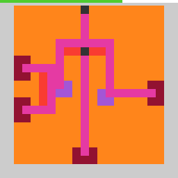

sp80
Move straight and corner pieces so launched water reaches every cup with no stream left on the board.
6 levels · 10 rules · all levels replayed in Lean
Replay
The certified run that cleared every level, one action at a time.

Press Play or step to load the run. Keys, while the player is on screen: ← → step, Space play / pause. A click is circled; cells that changed are outlined.
How it plays
Each launch port is a pink ball attached to one dark-grey launcher cell; the field also has cups, walls, and pieces the player can move: a straight piece is red when placed, a corner piece is purple, and the selected piece is blue. Click a piece to select it, and the arrow keys move it one cell. Press the launch key to release water: the water starts from the ball and flows away from the launcher; if the front is empty it falls forward, when it lands on a piece it flows along the piece face toward both ends, when it falls into the inner corner of a corner piece it shoots out sideways in the other direction, and when the sideways flow hits a piece it climbs up and down along the piece. The level is cleared when every cup mouth has received water and no stream of water is left standing on the board (landing on a wall, on a cup wall, or pooling on a piece); water flowing out over the board edge does not count. In some levels the water flows upward. Within one level the number of launches has a limit, and if the level is still not cleared when it is reached, the game is over.

Model
The final model: 3 object types and 10 rules. Each rule is a Python check against every recorded step; 6 of them are translated into Lean (the paper's per-game table). Code under a rule is the file of the same name in the agent's Lean project.
Object types
- Board
boardGrid, walls, cups, and launch ports; nothing on it moves within a level.Lean · Board.lean
import Obj.Board.Grid import Obj.Board.Source namespace Game structure Board where grid : Grid walls : List Pos cups : List Pos sources : List Source budget : Nat deriving Repr end Game - Pieces
piecesSmall movable straight or corner pieces; the blue one is selected.Lean · Piece.lean
-- World.pieces : List Piece structure Piece where cells : List Pos marks : List Pos bent : Bool deriving DecidableEq, Repr - Budget bar
hudA green line at the edge showing the share of steps left this level.Python only
Rules
arrow_shifts_selectedArrow keys move the selected piece one cell, covering other pieces in its way.Python
from __future__ import annotations from derive.forbidden import blocked from derive.render import render from rule._common import ARROWS, SEL, MARK, is_arrow, same_level … HISTORY = [ … … … … ] LEAN = ("def", "Rule/Move/ArrowShifts.lean") def scope_(w, a, nw, ctx): if not is_arrow(a): … if not same_level(ctx): … if nw is None: … dr, dc = ARROWS[a] if blocked(w, w.selected, dr, dc): … return None def assert_(w, a, nw, ctx) -> bool: dr, dc = ARROWS[a] old = w.selected new = old.shifted(dr, dc) if nw.selected is None or nw.selected.cells != new.cells or nw.selected.marks != new.marks: return False before, after = render(w), render(nw) for p in new.cells: if after[p] != (MARK if p in new.marks else SEL): return False vacated = old.cells - new.cells for p, v in before.items(): if p in new.cells or p in vacated: continue if after[p] != v: return False return TrueLean · ArrowShifts.lean
import Rule.Move.ArrowBlocked import Obj.World import Obj.Pieces.Piece namespace Game inductive Dir where | up | down | left | right deriving DecidableEq, Repr def Dir.f : Dir → Pos → Pos | .up => (· - 64) | .down => (· + 64) | .left => (· - 1) | .right => (· + 1) def arrowStep (b : Board) (w : World) (d : Dir) : World := match stillIfBlocked b w d.f with | some w' => w' | none => { w with pieces := w.pieces.dropLast ++ (w.pieces.getLast?.map (·.shift d.f)).toList } end Gameclick_selects_hit_pieceClicking inside a piece's bounding box selects it, turning it blue; the old one drops.Python
from __future__ import annotations from derive.hit import click_cell, hit from derive.render import render from rule._common import MARK, SEL, THIN, FAT, is_click, same_level … … … HISTORY = [ … … … … … ] LEAN = ("def", "Rule/Move/ClickSelects.lean") def scope_(w, a, nw, ctx): if not is_click(a): … if not same_level(ctx): … if nw is None: … if hit(w, click_cell(w, a)) is None: … if ctx.get("occluded"): … return None def assert_(w, a, nw, ctx) -> bool: i = hit(w, click_cell(w, a)) target = w.pieces[i] old = w.selected if nw.selected is None or nw.selected.cells != target.cells: return False before, after = render(w), render(nw) for p in target.cells: if after[p] != (MARK if p in target.marks else SEL): return False for p in old.cells - target.cells: want = MARK if p in old.marks else None if want is not None and after[p] != want: return False if want is None and after[p] not in (THIN, FAT): return False for p, v in before.items(): if p in target.cells or p in old.cells: continue if after[p] != v: return False return TrueLean · ClickSelects.lean
import Obj.Board.Board import Obj.Composite.Hit import Rule.Respond.RestColor namespace Game def clickStep (b : Board) (w : World) (x y : Nat) : World := match hit w (b.grid.cellOfPixel x y) with | none => w | some i => match w.pieces[i]?, w.pieces.getLast? with | some tgt, some old => let rest := (w.pieces.dropLast.zipIdx.filter (fun (_, j) => j != i)).map (·.1) { w with pieces := rest ++ [putDown old, tgt] } | _, _ => w end Gamedeselected_rest_color_by_shapeUnselected straight pieces turn red and corner pieces purple; their marks stay dark grey.Python
from __future__ import annotations from objects import straight from rule._common import FAT, MARK, THIN, is_click, is_fire, same_level from derive.render import render … HISTORY = [ … … … ] LEAN = ("def", "Rule/Respond/RestColor.lean") def scope_(w, a, nw, ctx): if not (is_click(a) or is_fire(a)): … if not same_level(ctx): … if nw is None: … if nw.selected is None or nw.selected.cells == w.selected.cells: … return None def assert_(w, a, nw, ctx) -> bool: old, new = w.selected, nw.selected want = THIN if straight(old.cells) else FAT n = render(nw) for p in old.cells - new.cells: if n[p] != (MARK if p in old.marks else want): return False return TrueLean · RestColor.lean
import Obj.Pieces.Piece namespace Game def restBent (cs : List Pos) : Bool := !(straight cs) def putDown (pc : Piece) : Piece := { pc with bent := restBent pc.cells } end Gamehud_ticks_every_actionEvery arrow, click, or launch shortens the budget bar by one notch.Python
from __future__ import annotations from derive.ladder import BUDGET_BY_LEVEL, succ from rule._common import same_level … HISTORY = [ … … … … … … ] LEAN = ("def", "Rule/Respond/HudTicks.lean") def scope_(w, a, nw, ctx): if a == "RESET": return "RESET" if not same_level(ctx): … if nw is None: … if ctx.get("level") not in BUDGET_BY_LEVEL: … return None def assert_(w, a, nw, ctx) -> bool: return nw.hud in succ(w.hud, BUDGET_BY_LEVEL[ctx["level"]])Lean · HudTicks.lean
import Obj.World namespace Game def tick (w : World) : World := { w with k := w.k + 1 } end Gamefire_wins_iff_all_mouths_fedA launch clears the level when every cup mouth gets water and no stream stays.Python
from __future__ import annotations from derive.flow import fire_outcome from rule._common import is_fire … HISTORY = [ … … … … … … … … … … … … … … ] LEAN = ("def", "Rule/Win/FireWins.lean") def scope_(w, a, nw, ctx): if not is_fire(a): … if fire_outcome(w) is None: … return None def assert_(w, a, nw, ctx) -> bool: won = ctx.get("kind") in ("levelup", "final") return fire_outcome(w) == wonLean · FireWins.lean
import Obj.Composite.Flow namespace Game inductive Fire where | won | silent deriving DecidableEq, Repr def fireStep (b : Board) (w : World) : Fire := match fireOutcome b w with | some true => .won | _ => .silent end Gamefire_miss_moves_nothingA failed launch moves no piece, only the selection may change; left out of model.Python onlyPython
from __future__ import annotations from derive.render import render from rule._common import MARK, SEL, THIN, FAT, is_fire, same_level PIECE_COLORS = {SEL, THIN, FAT} … HISTORY = [ … … ] … … def scope_(w, a, nw, ctx): if not is_fire(a): … if not same_level(ctx): … if nw is None: … return None def assert_(w, a, nw, ctx) -> bool: b, n = render(w), render(nw) for p in b: pb, pn = b[p] in PIECE_COLORS, n[p] in PIECE_COLORS if pb != pn: return False if not pb and b[p] != n[p]: return False if (b[p] == MARK) != (n[p] == MARK): return False return Truehandoff_goes_to_nearestSelection passes to the piece nearest the port along the flow; left out of model.Python onlyPython
from __future__ import annotations from derive.nearest import nearest_other from rule._common import is_fire, same_level … HISTORY = [ … … … … ] … … def scope_(w, a, nw, ctx): if not is_fire(a): … if not same_level(ctx): … if nw is None: … if nw.selected is None or nw.selected.cells == w.selected.cells: … return None def assert_(w, a, nw, ctx) -> bool: i = nearest_other(w) return i is not None and w.pieces[i].cells == nw.selected.cellslevelup_refills_budgetAfter a level is cleared, the budget bar refills; left out of the model.Python onlyPython
from __future__ import annotations … HISTORY = [ … … … … ] … … def scope_(w, a, nw, ctx): if ctx.get("kind") != "levelup": … if nw is None: … return None def assert_(w, a, nw, ctx) -> bool: return nw.hud == 64reset_returns_to_openingReset restores the first-seen opening with a full budget bar; left out of the model.Python onlyPython
from __future__ import annotations from derive.render import render … HISTORY = [ … … ] … … def scope_(w, a, nw, ctx): if a != "RESET": … if nw is None: … if ctx.get("opening0") is None: … return None def assert_(w, a, nw, ctx) -> bool: o = ctx["opening0"] return nw.hud == 64 and render(nw) == render(o)fifth_fire_in_a_level_killsHitting a level's launch limit without clearing ends the game; left out of the model.Python onlyPython
from __future__ import annotations from rule._common import is_fire … HISTORY = [ … … … ] … … def scope_(w, a, nw, ctx): if not is_fire(a): … if ctx.get("fires_before") != 4: … return None def assert_(w, a, nw, ctx) -> bool: return ctx.get("kind") in ("levelup", "final") or ctx.get("state_next") == "GAME_OVER"
Code is shown with comments and the agent's notes removed; the files as written are in the archive under Check it yourself.
Proof
For every level, Lean starts from the level's first screen, applies the model's rules to the certified actions, and checks that every computed state agrees with the recorded frame on the components the model represents, and that the last one wins. Each theorem is closed by the Lean kernel and is a statement about the learned model.
Every level can be won
theorem L0_winnable : Winnable (boardOf 0) (L0_start : World) := …theorem L1_winnable : Winnable (boardOf 1) (L1_start : World) := …theorem L2_winnable : Winnable (boardOf 2) (L2_start : World) := …theorem L3_winnable : Winnable (boardOf 3) (L3_start : World) := …theorem L4_winnable : Winnable (boardOf 4) (L4_start : World) := …theorem L5_winnable : Winnable (boardOf 5) (L5_start : World) := …Statements only; the proofs and the full Lean project are in the archive, with the steps to re-run them, under Check it yourself.
Check it yourself
Everything on this page comes from files you can download and check. The archive holds the agent's files: the recorded run, the concept book, the concept sources, the Lean project and the sealed model file, plus the record of our kernel check.
Download sp80.zip 0.7 MB · 73 files
Re-run the proof
Before you start: our run of this check took 150 s and 6.3 GB of memory at its peak (2026-10-24).
- Download sp80.zip and unpack it. The model and its theorems are in
archive/sp80-20260923/formal/Game.lean. Before changing it, check that its SHA-256 isf60c20bafd851f899971c0a20f0264cecbf41ef1831c5ecc8b71d4ba1780474e - Install Lean with elan, then the version named in the archive's
lean-toolchain:elan toolchain install leanprover/lean4:v4.34.0 - Copy the model file to
Check.leanand append these two lines to the copy:#print axioms consistent #print axioms faithful - In the folder that holds
Check.lean, run:lean +leanprover/lean4:v4.34.0 -M60000 Check.lean - Lean should finish without errors and print:
The first line is printed by the file itself: for each rule, how many recorded transitions meet its condition.GUARD_HITS action1_moves_color9_up=475,action2_moves_color9_down=459,action3_moves_color9_left=588,action4_moves_color9_right=543,shift_blocked_is_exactly_the_no_move_condition=2065,pieces_do_not_block_pieces=258,pieces_overlap_no_blocking=586,piece_cells_conserved_under_moves=2066,action6_click_selects_that_piece=317,action6_click_selects_piece=313,action6_click_off_piece_inert=87,action5_noop=730,action5_never_moves_pieces=289,only_the_bar_ever_moves=358,level1_ball_and_cups_frozen=853,level5_ball_cups_frozen=1015,bar_arena_is_9x12=356,level1_inventory_at_most_11=853,level0_win_bar_at_row11_col6=340,color8_only_at_budget_end=340,reset_restores_level0_layout=18,action5_handoff_swaps_width=138,zero_deflection_never_levels_up=62,action5_handoff_goes_to_nearest=270 'consistent' depends on axioms: [propext] 'faithful' depends on axioms: [propext]
What a pass establishes
consistent: for every recorded transition, as read by the agent's parser and with duplicates removed, every rule whose condition holds also has its effect hold. faithful: the certified run, recomputed step by step from the first screen of each level, matches the record and ends in a win. Axioms used: propext, all among Lean's standard ones.
What it does not establish: that the parser reads the screens correctly (that step runs in Python, outside Lean), or that a rule whose condition never occurs in the record is right. The Python file that produced the readings inside the model file is in the archive at meta/repair-20260928/lib/sp80-20260923/_lib.py.